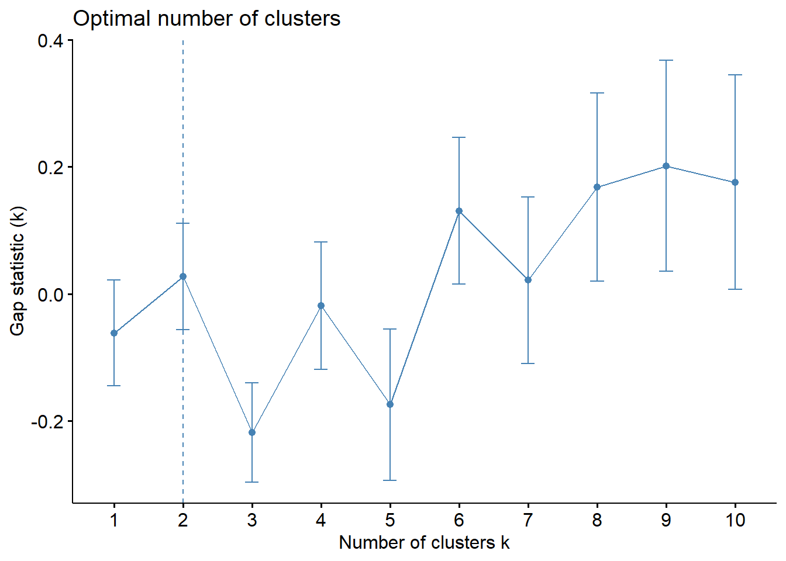
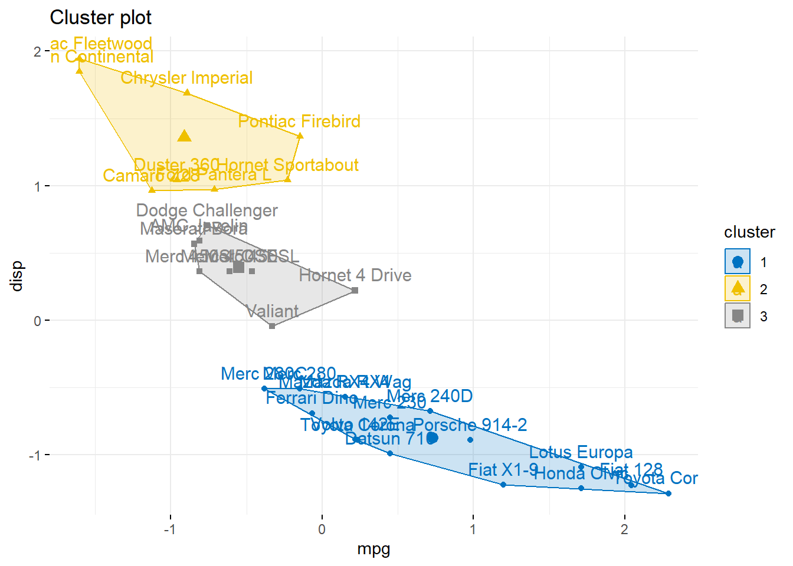
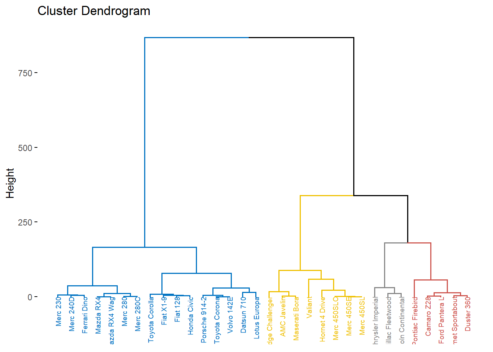

pacman::p_load(tidyverse, magrittr, conflicted,
ggdendro, broom, cluster)
conflict_prefer("select", "dplyr")
conflict_prefer("filter", "dplyr")
conflict_prefer("mutate", "dplyr")Clusteranalysen
Version vom Juni 30, 2023 um 11:38:36

“Cluster together like stars!” — Henry Miller
In diesem Kapitel wollen wir uns
Teilweise haben wir Überlagerungen mit dem Kapitel ?@sec-outlier
Genutzte R Pakete
Wir wollen folgende R Pakete in diesem Kapitel nutzen.
Am Ende des Kapitels findest du nochmal den gesamten R Code in einem Rutsch zum selber durchführen oder aber kopieren.
Daten
Woher
drymatter_tbl <- read_excel("data/meta/drymatter_iron_studies.xlsx") Schauen
| author | n | mean | sd |
|---|---|---|---|
| DeRubeis, 2005 | 180 | 32.6 | 9.4 |
| Dimidjian, 2006 | 145 | 31.9 | 7.4 |
| Dozois, 2009 | 48 | 28.6 | 9.9 |
| Lesperance, 2007 | 142 | 30.3 | 9.1 |
| McBride, 2007 | 301 | 31.9 | 9.2 |
| Quilty, 2014 | 104 | 29.8 | 8.6 |
Ein weiterer
sunflower_tbl <- read_excel("data/meta/infected_sunflower_studies.xlsx") Auch
| author | event | n |
|---|---|---|
| Becker, 2008 | 2186 | 21826 |
| Boyd, 2009 | 91 | 912 |
| Boyd, 2007 | 126 | 1084 |
| Cerda, 2014 | 543 | 7646 |
| Fiellin, 2013 | 6496 | 55215 |
| Jones, 2013 | 10850 | 114783 |
| Lord, 2011 | 86 | 527 |
| McCabe, 2005 | 668 | 9403 |
| McCabe, 2012 | 843 | 11274 |
| McCabe, 2013 | 647 | 8888 |
| Nakawai, 2012 | 11521 | 126764 |
| Sung, 2005 | 1111 | 11554 |
| Tetrault, 2007 | 2090 | 16599 |
| Wu, 2008 | 2193 | 25127 |
| Zullig, 2012 | 1913 | 22783 |
Häufig
Heatmap
Dendrogramm
car <- select(mtcars, mpg, disp)
h.cluster <- car %>% dist(., method = "euclidean") %>% hclust(., method = "ward.D")
ggdendrogram(h.cluster)p.cluster <- car %>% kmeans(., 2)
p.cluster$cluster <- as.factor(p.cluster$cluster)
ggplot(car, aes(mpg, disp, label = rownames(car))) +
scale_fill_discrete(name = "Cluster") + xlim(9,35) +
geom_label(aes(fill = p.cluster$cluster), colour = "white",
fontface = "bold", size=2)
multi.clust <- data.frame(k = 1:6) %>% group_by(k) %>% do(clust = kmeans(car, .$k))
sumsq.clust <- multi.clust %>% group_by(k) %>% do(glance(.$clust[[1]]))
ggplot(sumsq.clust, aes(k, tot.withinss)) + geom_line() + geom_point()
multi.clust <- data.frame(k = 1:6) %>% group_by(k) %>% do(clust = kmeans(car, .$k))
multi.k <- multi.clust %>% group_by(k) %>% do(augment(.$clust[[1]], car))
ggplot(multi.k, aes(mpg, disp)) + geom_point(aes(color = .cluster)) +
facet_wrap(~k)
Um das Ergebnis der Gruppenfindung zu beurteilen, eignet sich ein Silhouettenplot. Ein Silhouettenplot zeigt für jede Beobachtung i die Silhouettenbreite \(s_i\), welche definiert ist als normierte Differenz der kleinsten Distanz zu den Beobachtungen außerhalb der eigenen Gruppe und dem Mittelwert der Distanzen innerhalb einer Gruppe. Die Silhouettenbreite \(s_i\) kann jeden Wert im Intervall [-1, 1] annehmen und wird folgendermaßen interpretiert. - \(s_i = 1\) Die Beobachtung ist dem “richtigen” Cluster zugeordnet. - \(s_i = 0\) Die Beobachtung hätte ebenso gut einer anderen Gruppe zugeordnet werden können. - \(s_i = -1\) Die Beobachtung ist schlecht zugeordnet. Es kann darüber hinaus die durchschnittliche Silhouettenbreite über alle Beobachtungen berechnet werden, womit sich die Gruppenbildung als Ganzes beurteilen lässt. Die durchschnittliche Silhouettenbreite wird analog interpretiert.
data(ruspini)
pr4 <- pam(ruspini, 4)
si2 <- silhouette(pr4$clustering, dist(ruspini, "canberra"))
sil.data <- data.frame(cluster = factor(si2[, 1]), sil_width = si2[, 3])
ggplot(sil.data, aes(x = row.names(sil.data), y = sil_width, fill = cluster)) +
geom_bar(stat = "identity", width = 0.5) + coord_flip() + labs(x = "") +
scale_x_discrete(limits = row.names(sil.data[order(sil.data$cluster,
sil.data$sil_width), ]))